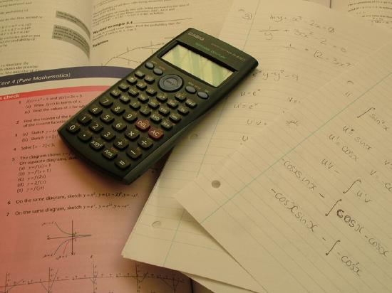
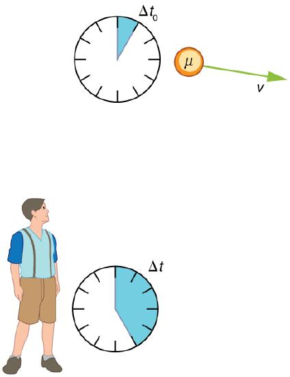
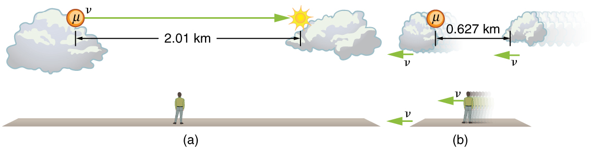
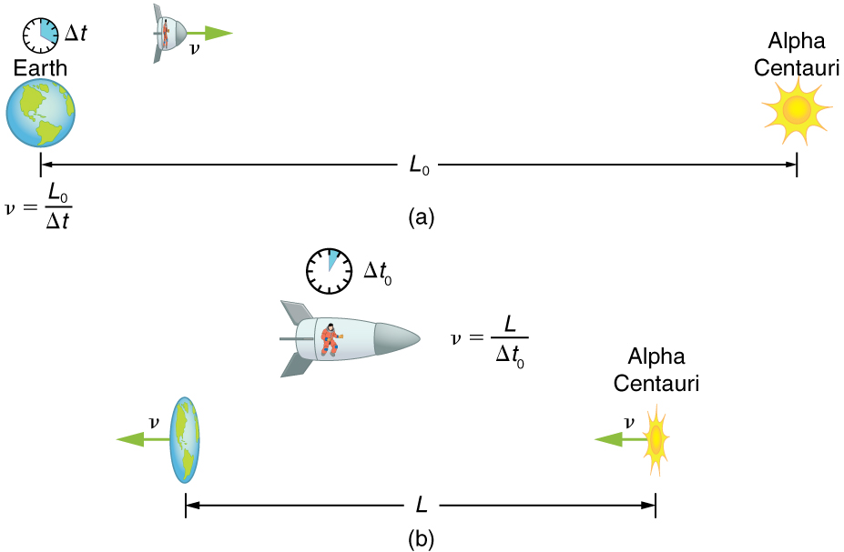
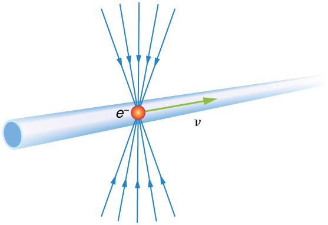
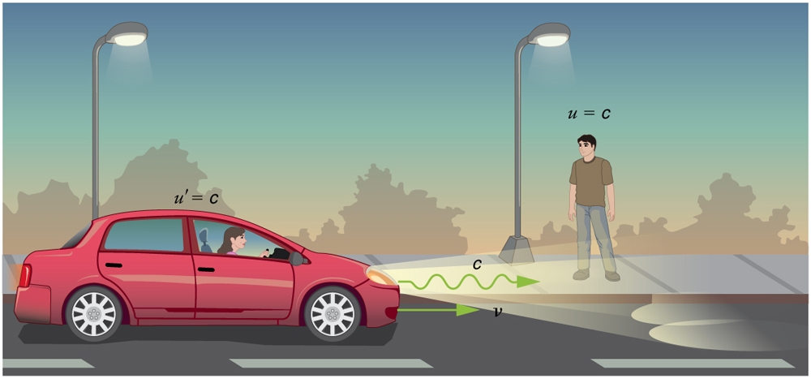
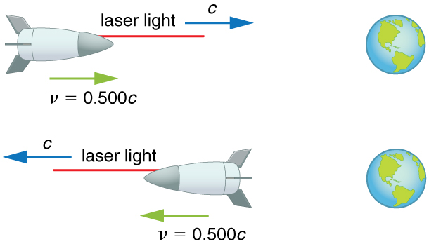
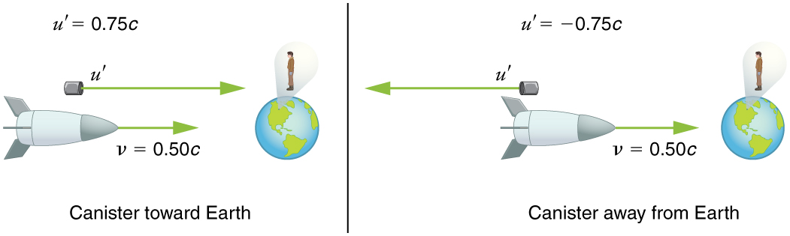
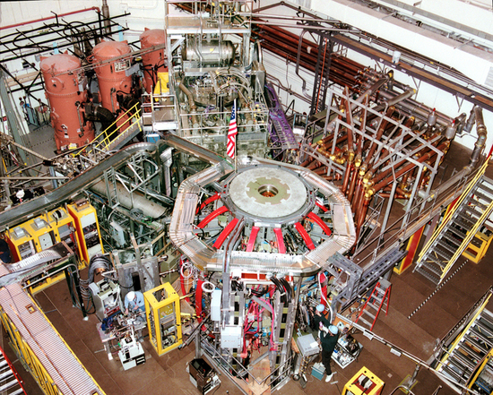
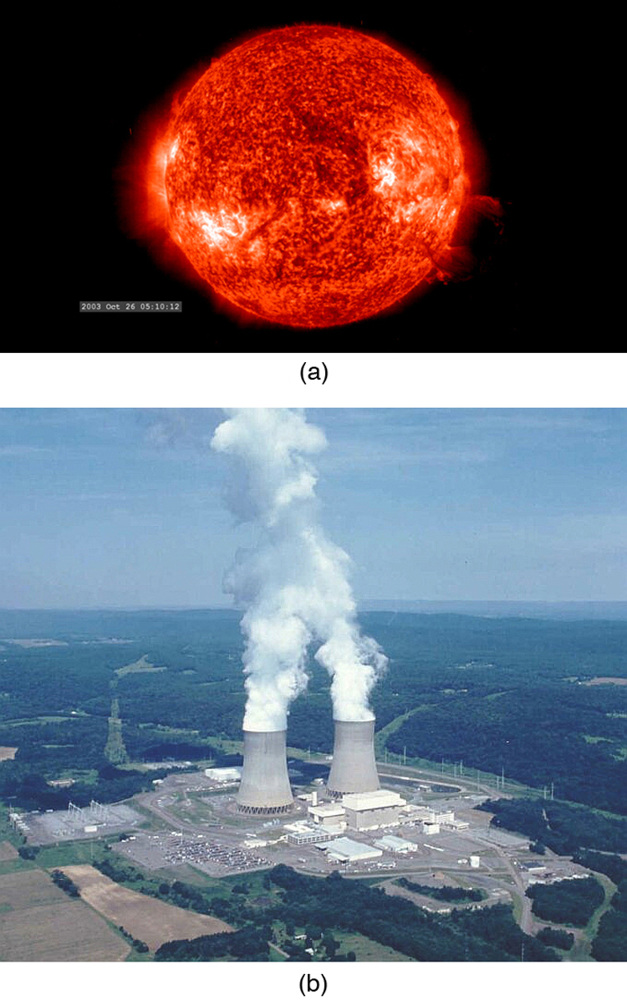

- State and explain both of Einstein’s postulates.
- Explain what an inertial frame of reference is.
- Describe one way the speed of light can be changed
Have you ever used the Pythagorean Theorem and gotten a wrong answer? Probably not, unless you made a mistake in either your algebra or your arithmetic. Each time you perform the same calculation, you know that the answer will be the same. Trigonometry is reliable because of the certainty that one part always flows from another in a logical way. Each part is based on a set of postulates, and you can always connect the parts by applying those postulates. Physics is the same way with the exception thatallparts must describe nature. If we are careful to choose the correct postulates, then our theory will follow and will be verified by experiment.

Einstein essentially did the theoretical aspect of this method forrelativity. With two deceptively simple postulates and a careful consideration of how measurements are made, he produced the theory ofspecial relativity.
The first postulate upon which Einstein based the theory of special relativity relates to reference frames. All velocities are measured relative to some frame of reference. For example, a car’s motion is measured relative to its starting point or the road it is moving over, a projectile’s motion is measured relative to the surface it was launched from, and a planet’s orbit is measured relative to the star it is orbiting around. The simplest frames of reference are those that are not accelerated and are not rotating. Newton’s first law, the law of inertia, holds exactly in such a frame.
Definition: Inertial Reference Frame
Aninertial frame of referenceis a reference frame in which a body at rest remains at rest and a body in motion moves at a constant speed in a straight line unless acted on by an outside force.
The laws of physics seem to be simplest in inertial frames. For example, when you are in a plane flying at a constant altitude and speed, physics seems to work exactly the same as if you were standing on the surface of the Earth. However, in a plane that is taking off, matters are somewhat more complicated. In these cases, the net force on an object, \(F\), is not equal to the product of mass and acceleration, \(ma\). Instead, \(F\) is equal to \(ma\) plus a fictitious force. This situation is not as simple as in an inertial frame. Not only are laws of physics simplest in inertial frames, but they should be the same in all inertial frames, since there is no preferred frame and no absolute motion. Einstein incorporated these ideas into hisfirst postulate of special relativity.
First Postulate of Special Relativity
The laws of physics are the same and can be stated in their simplest form in all inertial frames of reference.
As with many fundamental statements, there is more to this postulate than meets the eye. The laws of physics include only those that satisfy this postulate. We shall find that the definitions of relativistic momentum and energy must be altered to fit. Another outcome of this postulate is the famous equation \(E = mc^{2}\).
The second postulate upon which Einstein based his theory of special relativity deals with the speed of light. Late in the 19th century, the major tenets of classical physics were well established. Two of the most important were the laws of electricity and magnetism and Newton’s laws. In particular, the laws of electricity and magnetism predict that light travels at \(c = 3.00 \times 10^{8} m/s\) in a vacuum, but they do not specify the frame of reference in which light has this speed.
There was a contradiction between this prediction and Newton’s laws, in which velocities add like simple vectors. If the latter were true, then two observers moving at different speeds would see light traveling at different speeds. Imagine what a light wave would look like to a person traveling along with it at a speed \(c\). If such a motion were possible then the wave would be stationary relative to the observer. It would have electric and magnetic fields that varied in strength at various distances from the observer but were constant in time. This is not allowed by Maxwell’s equations. So either Maxwell’s equations are wrong, or an object with mass cannot travel at speed \(c\). Einstein concluded that the latter is true. An object with mass cannot travel at speed \(c\). This conclusion implies that light in a vacuum must always travel at speed \(c\) relative to any observer. Maxwell’s equations are correct, and Newton’s addition of velocities is not correct for light.
Investigations such as Young’s double slit experiment in the early-1800s had convincingly demonstrated that light is a wave. Many types of waves were known, and all travelled in some medium. Scientists therefore assumed that a medium carried light, even in a vacuum, and light travelled at a speed \(c\) relative to that medium. Starting in the mid-1880s, the American physicist A. A. Michelson, later aided by E. W. Morley, made a series of direct measurements of the speed of light. The results of their measurements were startling.
Michelson-Morley Experiment
TheMichelson-Morley experimentdemonstrated that the speed of light in a vacuum is independent of the motion of the Earth about the Sun.
The eventual conclusion derived from this result is that light, unlike mechanical waves such as sound, does not need a medium to carry it. Furthermore, the Michelson-Morley results implied that the speed of light \(c\) is independent of the motion of the source relative to the observer. That is, everyone observes light to move at speed \(c\) regardless of how they move relative to the source or one another. For a number of years, many scientists tried unsuccessfully to explain these results and still retain the general applicability of Newton’s laws.
It was not until 1905, when Einstein published his first paper on special relativity, that the currently accepted conclusion was reached. Based mostly on his analysis that the laws of electricity and magnetism would not allow another speed for light, and only slightly aware of the Michelson-Morley experiment, Einstein detailed hissecond postulate of special relativity.
Second Postulate of Special Relativity
The speed of light \(c\) is a constant, independent of the relative motion of the source.
Deceptively simple and counterintuitive, this and the first postulate leave all else open for change. Some fundamental concepts do change. Among the changes are the loss of agreement on the elapsed time for an event, the variation of distance with speed, and the realization that matter and energy can be converted into one another. You will read about these concepts in the following sections.
Misconception Alert: Constancy of the Speed of Light
The speed of light is a constant \(c = 3.00 \times 10^{8} m/s\)in a vacuum.If you remember the effect of the index of refraction fromThe Law of Refraction, the speed of light is lower in matter.
Exercise
Explain how special relativity differs from general relativity.
Special relativity applies only to unaccelerated motion, but general relativity applies to accelerated motion.
📖 OpenStax College Physics, Section 28.1. openstax.org · CC BY 4.0
- Describe simultaneity.
- Describe time dilation.
- Calculate γ.
- Compare proper time and the observer’s measured time.
- Explain why the twin paradox is a false paradox.
Do time intervals depend on who observes them? Intuitively, we expect the time for a process, such as the elapsed time for a foot race, to be the same for all observers. Our experience has been that disagreements over elapsed time have to do with the accuracy of measuring time. When we carefully consider just how time is measured, however, we will find that elapsed time depends on the relative motion of an observer with respect to the process being measured.
Consider how we measure elapsed time. If we use a stopwatch, for example, how do we know when to start and stop the watch? One method is to use the arrival of light from the event, such as observing a light turning green to start a drag race. The timing will be more accurate if some sort of electronic detection is used, avoiding human reaction times and other complications.
Now suppose we use this method to measure the time interval between two flashes of light produced by flash lamps (Figure . Two flash lamps with observer A midway between them are on a rail car that moves to the right relative to observer B. Observer B arranges for the light flashes to be emitted just as A passes B, so that both A and B are equidistant from the lamps when the light is emitted. Observer B measures the time interval between the arrival of the light flashes. According to postulate 2, the speed of light is not affected by the motion of the lamps relative to B. Therefore, light travels equal distances to him at equal speeds. Thus observer B measures the flashes to be simultaneous.
![A girl as observer A is sitting down midway on a rail car with two flash lamps at opposite sides equidistant from her. Multiple light rays that are emitted from respective flash lamps towards observer A are shown with arrows. A velocity vector arrow for the rail car is shown towards the right. A male observer B standing on the platform is facing her. Now observer A moves with the lamps on a rail car that is as the rail car moves towards the right of observer B. Observer B receives the light flashes simultaneously, but he notes that observer A receives the flash from the right first. B observes the flashes to be simultaneous to him but not to A.](images/ch28/fig28-5-a-girl-as-observer-a-is-sitting-down-mid.jpg)
Now consider what observer B sees happen to observer A. Observer B views light from the right reaching observer A before light from the left, because she has moved toward that flash lamp, lessening the distance the light must travel and reducing the time it takes to get to her. Light travels at speed \(c\) relative to both observers, but observer B remains equidistant between the points where the flashes were emitted, while A gets closer to the emission point on the right. From observer B’s point of view, then, there is a time interval between the arrival of the flashes to observer A. Observer B measures the flashes to arrive simultaneously relative to him but not relative to A.
Now consider what observer A sees happening. She sees the light from the right at the same time that she sees the light from the left. Since both lamps are the same distance from her in her reference frame, from her perspective, the flashes occurred at the same time. Here a relative velocity between observers affects whether two events are observed to be simultaneous.
Simultaneity is not absolute.
This illustrates the power of clear thinking. We might have guessed incorrectly that if light is emitted simultaneously, then two observers halfway between the sources would see the flashes simultaneously. But careful analysis shows this not to be the case. Einstein was brilliant at this type ofthought experiment(in German, “Gedankenexperiment”). He very carefully considered how an observation is made and disregarded what might seem obvious. The validity of thought experiments, of course, is determined by actual observation. The genius of Einstein is evidenced by the fact that experiments have repeatedly confirmed his theory of relativity.
In summary: Two events are defined to be simultaneous if an observer measures them as occurring at the same time (such as by receiving light from the events). Two events are not necessarily simultaneous to all observers.
The consideration of the measurement of elapsed time and simultaneity leads to an important relativistic effect.
Definition: Time Dilation
Time dilationis the phenomenon of time passing slower for an observer who is moving relative to another observer.
Suppose, for example, an astronaut measures the time it takes for light to cross her ship, bounce off a mirror, and return (Figure . How does the elapsed time the astronaut measures compare with the elapsed time measured for the same event by a person on the Earth? Asking this question (another thought experiment) produces a profound result. We find that the elapsed time for a process depends on who is measuring it. In this case, the time measured by the astronaut is smaller than the time measured by the Earth-bound observer. The passage of time is different for the observers because the distance the light travels in the astronaut’s frame is smaller than in the Earth-bound frame. Light travels at the same speed in each frame, and so it will take longer to travel the greater distance in the Earth-bound frame.
![For part a, an astronaut is standing inside the spaceship with an electronic timer. The timer is showing the time delta-t-zero. The astronaut has to measure time for an activity which has a mirror, the Sun as a source of light, and a receiver. A ray from the light source is striking the mirror and getting reflected back to the receiver. The distance between the source of light and mirror is given by d. For part b, the same activity is observed by a man standing on Earth. He has an electronic timer showing the time as delta-t. For the observer on earth the activity is fragmented into three portions. In the first portion, the ray of light is travelling a distance of and strikes the mirror in the second portion. The third portion shows the reflected ray of light striking the receiver represented by s and having a vertical distance of d. The horizontal distance L observed by the man from the beginning of the event till the end portion is given as L equals to velocity v into delta t upon two.](images/ch28/fig28-6-for-part-a-an-astronaut-is-standing-insi.jpg)
To quantitatively verify that time depends on the observer, consider the paths followed by light as seen by each observer (Figure \(\PageIndex{3c}\)). The astronaut sees the light travel straight across and back for a total distance of \(2D\), twice the width of her ship. The Earth-bound observer sees the light travel a total distance \(2s\). Since the ship is moving at speed \(v\) to the right relative to the Earth, light moving to the right hits the mirror in this frame. Light travels at a speed \(c\) in both frames, and because time is the distance divided by speed, the time measured by the astronaut is \[\Delta t_{0} = \frac{2D}{c}.\label{28.3.1}\] This time has a separate name to distinguish it from the time measured by the Earth-bound observer.
Definition: Proper Time
Proper time\(\Delta t_{0}\) is the time measured by an observer at rest relative to the event being observed.
In the case of the astronaut observe the reflecting light, the astronaut measures proper time. The time measured by the Earth-bound observer is
To find the relationship between \(\Delta t_{0}\) and \(\Delta t\), consider the triangles formed by \(D\) and \(s\) (Figure \(\PageIndex{3c}\).) The third side of these similar triangles is \(L\), the distance the astronaut moves as the light goes across her ship. In the frame of the Earth-bound observer,
Using thePythagorean Theorem, the distance \(s\) is found to be
Substituting \(s\) into the expression for the time interval \(\Delta t\) gives
We square this equation, which yields
Note that if we square the first expression we had for \(\Delta t_0\) we get \((\Delta t_0)^2 = \frac{4D^2}{c^2}\). This term appears in the preceding equation, giving us a means to relate the two time intervals. Thus,
Gathering terms, we solve for \(\Delta t\):
Taking the square root yields an important relationship between elapsed times:
This equation for \(\Delta t\) is truly remarkable. First, as contended, elapsed time is not the same for different observers moving relative to one another, even though both are in inertial frames. Proper time \(\Delta t\) measured by an observer, like the astronaut moving with the apparatus, is smaller than time measured by other observers. Since those other observers measure a longer time \(\Delta t\), the effect is called time dilation. The Earth-bound observer sees time dilate (get longer) for a system moving relative to the Earth. Alternatively, according to the Earth-bound observer, time slows in the moving frame, since less time passes there. All clocks moving relative to an observer, including biological clocks such as aging, are observed to run slow compared with a clock stationary relative to the observer.
Note that if the relative velocity is much less than the speed of light \((v \ll c)\), then \(\frac{v^2}{c^2}\) is extremely small, and the elapsed times \(\Delta t\) and \(\Delta t_0\) are nearly equal. At low velocities, modern relativity approaches classical physics—our everyday experiences have very small relativistic effects.
The equation \(\Delta t = \gamma \delta t_0\) also implies that relative velocity cannot exceed the speed of light. As \(v\) approaches \(c\), \(\Delta t\) also implies that relative velocity cannot exceed the speed of light. As \(v\) exceeded \(c\), then we would be taking the square root of a negative number, producing an imaginary value for \(\Delta t\).
There is considerable experimental evidence that the equation \(\delta t = \gamma \Delta t_0\) is correct. One example is found in cosmic ray particles that continuously rain down on the Earth from deep space. Some collisions of these particles with nuclei in the upper atmosphere result in short-lived particles called muons. The half-life (amount of time for half of a material to decay) of a muon is \(1.52 \, \mu s\) when it is at rest relative to the observer who measures the half-life. This is the proper time \(\Delta t_0\). Muons produced by cosmic ray particles have a range of velocities, with some moving near the speed of light. It has been found that the muon’s half-life as measured by an Earth-bound observer \((\Delta t)\) varies with velocity exactly as predicted by the equation \(\delta t = \gamma \Delta t_0\). The faster the muon moves, the longer it lives. We on the Earth see the muon’s half-life time dilated—as viewed from our frame, the muon decays more slowly than it does when at rest relative to us.
Suppose a cosmic ray colliding with a nucleus in the Earth’s upper atmosphere produces a muon that has a velocity \(v = 0.950 \, c\). The muon then travels at constant velocity and lives \(1.52 \, \mu s\) as measured in the muon’s frame of reference. (You can imagine this as the muon’s internal clock.) How long does the muon live as measured by an Earth-bound observer (Figure ?

A clock moving with the system being measured observes the proper time, so the time we are given is \(\Delta t_0 = 1.52 \, \mu s\). The Earth-bound observer measures \(\Delta t\) as given by the equation \(\delta t = \gamma \Delta t_0\).
Since we know the velocity, the calculation is straightforward.
One implication of this example is that since \(\gamma = 3.20\) at \(95.0\%\) of the speed of light (\(v = 0.950c\)), the relativistic effects are significant. The two time intervals differ by this factor of 3.20, where classically they would be the same. Something moving at \(0.950 c\) is said to be highly relativistic.
Another implication of the preceding example is that everything an astronaut does when moving at \(95.0\%\) of the speed of light relative to the Earth takes 3.20 times longer when observed from the Earth. Does the astronaut sense this? Only if she looks outside her spaceship. All methods of measuring time in her frame will be affected by the same factor of 3.20. This includes her wristwatch, heart rate, cell metabolism rate, nerve impulse rate, and so on. She will have no way of telling, since all of her clocks will agree with one another because their relative velocities are zero. Motion is relative, not absolute. But what if she does look out the window?
Real World Connections
It may seem that special relativity has little effect on your life, but it is probably more important than you realize. One of the most common effects is through theGlobal Positioning System(GPS). Emergency vehicles, package delivery services, electronic maps, and communications devices are just a few of the common uses of GPS, and the GPS system could not work without taking into account relativistic effects. GPS satellites rely on precise time measurements to communicate. The signals travel at relativistic speeds. Without corrections for time dilation, the satellites could not communicate, and the GPS system would fail within minutes.
An intriguing consequence of time dilation is that a space traveler moving at a high velocity relative to the Earth would age less than her Earth-bound twin. Imagine the astronaut moving at such a velocity that \(\gamma = 30.0\) as in Figure . A trip that takes 2.00 years in her frame would take 60.0 years in her Earth-bound twin’s frame. Suppose the astronaut traveled 1.00 year to another star system. She briefly explored the area, and then traveled 1.00 year back. If the astronaut was 40 years old when she left, she would be 42 upon her return. Everything on the Earth, however, would have aged 60.0 years. Her twin, if still alive, would be 100 years old.
The situation would seem different to the astronaut. Because motion is relative, the spaceship would seem to be stationary and the Earth would appear to move. (This is the sensation you have when flying in a jet.) If the astronaut looks out the window of the spaceship, she will see time slow down on the Earth by a factor of \(\gamma = 30.0\). To her, the Earth-bound sister will have aged only 2/30 (1/15) of a year, while she aged 2.00 years. The two sisters cannot both be correct.
As with all paradoxes, the premise is faulty and leads to contradictory conclusions. In fact, the astronaut’s motion is significantly different from that of the Earth-bound twin. The astronaut accelerates to a high velocity and then decelerates to view the star system. To return to the Earth, she again accelerates and decelerates. The Earth-bound twin does not experience these accelerations. So the situation is not symmetric, and it is not correct to claim that the astronaut will observe the same effects as her Earth-bound twin. If you use special relativity to examine the twin paradox, you must keep in mind that the theory is expressly based on inertial frames, which by definition are not accelerated or rotating. Einstein developed general relativity to deal with accelerated frames and with gravity, a prime source of acceleration. You can also use general relativity to address the twin paradox and, according to general relativity, the astronaut will age less. Some important conceptual aspects of general relativity are discussed in the Section onGeneral Relativity and Quantum Gravityof this course.
In 1971, American physicists Joseph Hafele and Richard Keating verified time dilation at low relative velocities by flying extremely accurate atomic clocks around the Earth on commercial aircraft. They measured elapsed time to an accuracy of a few nanoseconds and compared it with the time measured by clocks left behind. Hafele and Keating’s results were within experimental uncertainties of the predictions of relativity. Both special and general relativity had to be taken into account, since gravity and accelerations were involved as well as relative motion.
Exercise
📖 OpenStax College Physics, Section 28.2. openstax.org · CC BY 4.0
- Describe proper length.
- Calculate length contraction.
- Explain why we don’t notice these effects at everyday scales.
Have you ever driven on a road that seems like it goes on forever? If you look ahead, you might say you have about 10 km left to go. Another traveler might say the road ahead looks like it’s about 15 km long. If you both measured the road, however, you would agree. Traveling at everyday speeds, the distance you both measure would be the same. You will read in this section, however, that this is not true at relativistic speeds. Close to the speed of light, distances measured are not the same when measured by different observers.
One thing all observers agree upon is relative speed. Even though clocks measure different elapsed times for the same process, they still agree that relative speed, which is distance divided by elapsed time, is the same. This implies that distance, too, depends on the observer’s relative motion. If two observers see different times, then they must also see different distances for relative speed to be the same to each of them.
The muonillustrates this concept. To an observer on the Earth, the muon travels at \(0.950c\) for \(7.05 \mu s\) from the time it is produced until it decays. Thus it travels a distance \[L_{0} = v \Delta t = \left(0.950\right)\left(3.00 \times 10^{8} m/s\right)\left(7.05 \times 10^{-6} s\right) = 2.01 km \label{28.4.1}\] relative to the Earth. In the muon’s frame of reference, its lifetime is only \(2.20 \mu s\). It has enough time to travel only \[L = v \Delta t_{0} = \left(0.950\right)\left(3.00 \times 10^{8} m/s\right)\left(2.20 \times 10^{-6} s\right) = 0.627 km. \label{28.4.2}\] The distance between the same two events (production and decay of a muon) depends on who measures it and how they are moving relative to it.
Proper length \(L_{0}\)is the distance between two points measured by an observer who is at rest relative to both of the points.
The Earth-bound observer measures the proper length \(L_{0}\), because the points at which the muon is produced and decays are stationary relative to the Earth. To the muon, the Earth, air, and clouds are moving, and so the distance \(L\) it sees is not the proper length.

To develop an equation relating distances measured by different observers, we note that the velocity relative to the Earth-bound observer in our muon example is given by \[v = \frac{L_{0}}{\Delta t}.\label{28.4.3}\] The time relative to the Earth-bound observer is \(\Delta t\), since the object being timed is moving relative to this observer. The velocity relative to the moving observer is given by \[v = \frac{L}{\Delta t_{0}}.\label{28.4.4}\] The moving observer travels with the muon and therefore observes the proper time \(\Delta t_{0}\). The two velocities are identical; thus, \[\frac{L_{0}}{\Delta t} = \frac{L}{\Delta t_{0}}.\label{28..4.5}\] We know that \(\Delta t = \gamma \Delta t_{0}\). Substituting this equation into the relationship above gives \[L = \frac{L_{0}}{\gamma}.\label{28.4.6}\] Substituting for \(\gamma\) gives an equation relating the distances measured by different observers.
Length contraction \(L\)is the shortening of the measured length of an object moving relative to the observer’s frame. \[L = L_{0} \sqrt{1-\frac{v^{2}}{c^{2}}}.\label{28.4.7}\]
If we measure the length of anything moving relative to our frame, we find its length \(L\) to be smaller than the proper length \(L_{0}\) that would be measured if the object were stationary. For example, in the muon’s reference frame, the distance between the points where it was produced and where it decayed is shorter. Those points are fixed relative to the Earth but moving relative to the muon. Clouds and other objects are also contracted along the direction of motion in the muon’s reference frame.
Suppose an astronaut, such as the twin discussed in "Simultaneity and Time Dilation," travels so fast that \(\gamma = 30.00\). (a) She travels from the Earth to the nearest star system, Alpha Centauri, 4.300 light years (ly) away as measured by an Earth-bound observer. How far apart are the Earth and Alpha Centauri as measured by the astronaut? (b) In terms of \(c\), what is her velocity relative to the Earth? You may neglect the motion of the Earth relative to the Sun. (See Figure 3.)

First note that a light year (ly) is a convenient unit of distance on an astronomical scale—it is the distance light travels in a year. For part (a), note that the 4.300 ly distance between the Alpha Centauri and the Earth is the proper distance \(l_0\), because it is measured by an Earth-bound observer to whom both stars are (approximately) stationary. To the astronaut, the Earth and the Alpha Centauri are moving by at the same velocity, and so the distance between them is the contracted length \(L\). In part (b), we are given \(\gamma\), and so we can find \(v\) by rearranging the definition of \(\gamma\) to express \(v\) in terms of \(c\).
Squaring both sides of the equation and rearranging terms gives: \[900.0 = \dfrac{1}{1 - \frac{v^2}{c^2}}\]
so that \[1 - \dfrac{v^2}{c^2} = \dfrac{1}{900.0}\] and \[\dfrac{v^2}{c^2} = 1 - \dfrac{1}{900.0} = 0.99888....\]
Taking the square root, we find \[\dfrac{v}{c} = 0.99944,\] which is rearranged to produce a value for the velocity \[v = 0.9994c.\]
First, remember that you should not round off calculations until the final result is obtained, or you could get erroneous results. This is especially true for special relativity calculations, where the differences might only be revealed after several decimal places. The relativistic effect is large here (γ=30.00), and we see that is approaching (not equaling) the speed of light. Since the distance as measured by the astronaut is so much smaller, the astronaut can travel it in much less time in her frame.
People could be sent very large distances (thousands or even millions of light years) and age only a few years on the way if they traveled at extremely high velocities. But, like emigrants of centuries past, they would leave the Earth they know forever. Even if they returned, thousands to millions of years would have passed on the Earth, obliterating most of what now exists. There is also a more serious practical obstacle to traveling at such velocities; immensely greater energies than classical physics predicts would be needed to achieve such high velocities. This will be discussed inRelatavistic Energy.
Why don’t we notice length contraction in everyday life? The distance to the grocery shop does not seem to depend on whether we are moving or not. Examining the equation \(L = L_0\sqrt{1 - \frac{v^2}{c^2}}\), we see that at low velocities \((v <  Exercise A particle is traveling through the Earth’s atmosphere at a speed of \(0.750c\). To an Earth-bound observer, the distance it travels is 2.50 km. How far does the particle travel in the particle’s frame of reference?
Paul Peter Urone (Professor Emeritus at California State University, Sacramento) and Roger Hinrichs (State University of New York, College at Oswego) with Contributing Authors: Kim Dirks (University of Auckland) and Manjula Sharma (University of Sydney). This work is licensed by OpenStax University Physics under aCreative Commons Attribution License (by 4.0).
Paul Peter Urone (Professor Emeritus at California State University, Sacramento) and Roger Hinrichs (State University of New York, College at Oswego) with Contributing Authors: Kim Dirks (University of Auckland) and Manjula Sharma (University of Sydney). This work is licensed by OpenStax University Physics under aCreative Commons Attribution License (by 4.0).
📖 OpenStax College Physics, Section 28.3. openstax.org · CC BY 4.0
- Calculate relativistic velocity addition.
- Explain when relativistic velocity addition should be used instead of classical addition of velocities.
- Calculate relativistic Doppler shift.
If you’ve ever seen a kayak move down a fast-moving river, you know that remaining in the same place would be hard. The river current pulls the kayak along. Pushing the oars back against the water can move the kayak forward in the water, but that only accounts for part of the velocity. The kayak’s motion is an example of classical addition of velocities. In classical physics, velocities add as vectors. The kayak’s velocity is the vector sum of its velocity relative to the water and the water’s velocity relative to the riverbank.
For simplicity, we restrict our consideration of velocity addition to one-dimensional motion. Classically, velocities add like regular numbers in one-dimensional motion (Figure . Suppose, for example, a girl is riding in a sled at a speed 1.0 m/s relative to an observer. She throws a snowball first forward, then backward at a speed of 1.5 m/s relative to the sled. We denote direction with plus and minus signs in one dimension; in this example, forward is positive. Let \(v\) be the velocity of the sled relative to the Earth, \(u\) the velocity of the snowball relative to the Earth-bound observer, and \(u'\) the velocity of the snowball relative to the sled.
![In part a, a man is pulling a sled towards the right with a velocity v equals one point zero meters per second. A girl sitting on the sled facing forward throws a snowball toward a boy on the far right of the picture. The snowball is labeled u primed equals one point five meters per second in the direction the sled is being pulled. The boy is labelled two point five meters per second. In figure b, a similar figure is shown, but the man’s velocity is one point zero meters per second, the girl is facing backward and throwing the snowball behind the sled. The snowball is labelled u primed equals negative one point five meters per second, and the boy is labelled u equals negative zero point five meters per second.](images/ch28/fig28-13-in-part-a-a-man-is-pulling-a-sled-toward.jpg)
CLASSICAL VELOCITY ADDITION
Thus, when the girl throws the snowball forward, \(U = 1.0 \, m/s + 1.5 \, m/s = 2.5 \, m/s\). It makes good intuitive sense that the snowball will head towards the Earth-bound observer faster, because it is thrown forward from a moving vehicle. When the girl throws the snowball backward, \(u = 1.0 \, m/s + (-1.5 \, m/s) = -0.5 \, m/s\). The minus sign means the snowball moves away from the Earth-bound observer.
The second postulate of relativity (verified by extensive experimental observation) says that classical velocity addition does not apply to light. Imagine a car traveling at night along a straight road, as in Figure . If classical velocity addition applied to light, then the light from the car’s headlights would approach the observer on the sidewalk at a speed \(u = v + c\). But we know that light will move away from the car at speed \(c\) relative to the driver of the car, and light will move towards the observer on the sidewalk at speed \(c\), too.

RELATIVISTIC VELOCITY ADDITION
Either light is an exception, or the classical velocity addition formula only works at low velocities. The latter is the case. The correct formula for one-dimensionalrelativistic velocity additionis
where \(v\) is the relative velocity between two observers, \(u\) is the velocity of an object relative to one observer, and \(u'\) is the velocity relative to the other observer. (For ease of visualization, we often choose to measure \(u\) in our reference frame, while someone moving at \(v\) relative to us measures \(u'\).) Note that the term \(\frac{vu'}{c^2}\) becomes very small at low velocities, and \(u = \frac{v + u}{1 + \frac{vu'}{v^2}}\) gives a result very close to classical velocity addition. As before, we see that classical velocity addition is an excellent approximation to the correct relativistic formula for small velocities. No wonder that it seems correct in our experience.
Suppose a spaceship heading directly towards the Earth at half the speed of light sends a signal to us on a laser-produced beam of light. Given that the light leaves the ship at speed as observed from the ship, calculate the speed at which it approaches the Earth.

Because the light and the spaceship are moving at relativistic speeds, we cannot use simple velocity addition. Instead, we can determine the speed at which the light approaches the Earth using relativistic velocity addition.
Relativistic velocity addition gives the correct result. Light leaves the ship at speed
and approaches the Earth at speed \(c\). The speed of light is independent of the relative motion of source and observer, whether the observer is on the ship or Earth-bound.
Velocities cannot add to greater than the speed of light, provided that \(v\) is less than \(c\) and \(u'\) does not exceed \(c\). The following example illustrates that relativistic velocity addition is not as symmetric as classical velocity addition.
Suppose the spaceship in the previous example is approaching the Earth at half the speed of light and shoots a canister at a speed of \(0.750 c\).

Because the canister and the spaceship are moving at relativistic speeds, we must determine the speed of the canister by an Earth-bound observer using relativistic velocity addition instead of simple velocity addition.
The minus sign indicates velocity away from the Earth (in the opposite direction from \(v\)), which means the canister is heading towards the Earth in part (a) and away in part (b), as expected. But relativistic velocities do not add as simply as they do classically. In part (a), the canister does approach the Earth faster, but not at the simple sum of \(1.250 c\). The total velocity is less than you would get classically. And in part (b), the canister moves away from the Earth at a velocity of \(-0.400c\), which isfasterthan the \(-0.250 c\) you would expect classically. The velocities are not even symmetric. In part (a) the canister moves \(0.409 c\) faster than the ship relative to the Earth, whereas in part (b) it moves \(0.900 c\) slower than the ship.
Although the speed of light does not change with relative velocity, the frequencies and wavelengths of light do. First discussed for sound waves, a Doppler shift occurs in any wave when there is relative motion between source and observer.
RELATIVISTIC DOPPLER EFFECTS
The observed wavelength of electromagnetic radiation is longer (called a red shift) than that emitted by the source when the source moves away from the observer and shorter (called a blue shift) when the source moves towards the observer.
In the Doppler equation \(\lambda_{obs}\) is the observed wavelength, \(\lambda_s\) is the source wavelength, and \(u\) is the relative velocity of the source to the observer. The velocity \(u\) is positive for motion away from an observer and negative for motion toward an observer. In terms of source frequency and observed frequency, this equation can be written \[f_{obs} = f_s \sqrt{\dfrac{1 - \frac{u}{c}}{1 + \frac{u}{c}}}.\] Notice that the – and + signs are different than in the wavelength equation.
CAREER CONNECTION: ASTRONOMER
If you are interested in a career that requires a knowledge of special relativity, there’s probably no better connection than astronomy. Astronomers must take into account relativistic effects when they calculate distances, times, and speeds of black holes, galaxies, quasars, and all other astronomical objects. To have a career in astronomy, you need at least an undergraduate degree in either physics or astronomy, but a Master’s or doctoral degree is often required. You also need a good background in high-level mathematics.
Suppose a galaxy is moving away from the Earth at a speed \(0.825 c\). It emits radio waves with a wavelength of \(0.525 \, m\).
What wavelength would we detect on the Earth?
Because the galaxy is moving at a relativistic speed, we must determine the Doppler shift of the radio waves using the relativistic Doppler shift instead of the classical Doppler shift.
Because the galaxy is moving away from the Earth, we expect the wavelengths of radiation it emits to be redshifted. The wavelength we calculated is 1.70 m, which is redshifted from the original wavelength of 0.525 m.
The relativistic Doppler shift is easy to observe. This equation has everyday applications ranging from Doppler-shifted radar velocity measurements of transportation to Doppler-radar storm monitoring. In astronomical observations, the relativistic Doppler shift provides velocity information such as the motion and distance of stars.
Exercise
Suppose a space probe moves away from the Earth at a speed \(0.350 c\). It sends a radio wave message back to the Earth at a frequency of 1.50 GHz. At what frequency is the message received on the Earth?
📖 OpenStax College Physics, Section 28.4. openstax.org · CC BY 4.0
- Calculate relativistic momentum.
- Explain why the only mass it makes sense to talk about is rest mass.
In classical physics, momentum is a simple product of mass and velocity. However, we saw in the last section that when special relativity is taken into account, massive objects have a speed limit. What effect do you think mass and velocity have on the momentum of objects moving at relativistic speeds?
Momentum is one of the most important concepts in physics. The broadest form of Newton’s second law is stated in terms of momentum. Momentum is conserved whenever the net external force on a system is zero. This makes momentum conservation a fundamental tool for analyzing collisions. All ofWork, Energy, and Energy Resourcesis devoted to momentum, and momentum has been important for many other topics as well, particularly where collisions were involved. We will see that momentum has the same importance in modern physics. Relativistic momentum is conserved, and much of what we know about subatomic structure comes from the analysis of collisions of accelerator-produced relativistic particles.
The first postulate of relativity states that the laws of physics are the same in all inertial frames. Does the law of conservation of momentum survive this requirement at high velocities? The answer is yes, provided that the momentum is defined as follows.
Definition: Relativistic Momentum
Relativistic momentum\(p\) is classical momentum multiplied by the relativistic factor \(\gamma\)
where \(m\) is the rest mass of the object, \(u\) is its velocity relative to an observer, and the relativistic factor
Note that we use \(u\) for velocity here to distinguish it from relative velocity \(v\) between observers. Only one observer is being considered here. With \(p\) defined in this way, total momentum \(p_{tot}\) is conserved whenever the net external force is zero, just as in classical physics. Again we see that the relativistic quantity becomes virtually the same as the classical at low velocities. That is, relativistic momentum \(\gamma mu\) becomes the classical \(mu\) at low velocities, because \(\gamma\) is very nearly equal to 1 at low velocities.
Relativistic momentum has the same intuitive feel as classical momentum. It is greatest for large masses moving at high velocities, but, because of the factor \(\gamma\), relativistic momentum approaches infinity as \(u\) approaches \(c\) (Figure . This is another indication that an object with mass cannot reach the speed of light. If it did, its momentum would become infinite, an unreasonable value.
![In this figure a graph is shown on a coordinate system of axes. The x-axis is labelled as speed u meter per second. On x-axis velocity of the object is shown in terms of the speed of light starting from zero at origin to one point zero c where c is the speed of light. The y-axis is labelled as momentum p rel kilogram meter per second. On y-axis relativistic momentum is shown in terms of kilogram meter per starting from zero at origin to four point zero. The graph in the given figure is concave up and moving upward along the vertical line at x is equal to one point zero c. This graph shows that relativistic momentum approaches infinity as the velocity of an object approaches the speed of light.](images/ch28/fig28-18-in-this-figure-a-graph-is-shown-on-a-coo.jpg)
MISCONCEPTION ALERT: RELATIVISTIC MASS AND MOMENTUM
The relativistically correct definition of momentum as \(p = \gamma mu\), is sometimes taken to imply that mass varies with velocity: \(m_{var} = \gamma m\), particularly in older textbooks. However, note that \(m\) is the mass of the object as measured by a person at rest relative to the object. Thus, \(m\) is defined to be the rest mass, which could be measured at rest, perhaps using gravity. When a mass is moving relative to an observer, the only way that its mass can be determined is through collisions or other means in which momentum is involved. Since the mass of a moving object cannot be determined independently of momentum, the only meaningful mass is rest mass. Thus, when we use the term mass, assume it to be identical to rest mass.
Relativistic momentum is defined in such a way that the conservation of momentum will hold in all inertial frames. Whenever the net external force on a system is zero, relativistic momentum is conserved, just as is the case for classical momentum. This has been verified in numerous experiments.
In Section onRelativistic Energy, the relationship of relativistic momentum to energy is explored. That subject will produce our first inkling that objects without mass may also have momentum.
Exercise
What is the momentum of an electron traveling at a speed \(0.985 c\)? The rest mass of the electron is \(9.11 \times 10^{-31} \, kg\).
📖 OpenStax College Physics, Section 28.5. openstax.org · CC BY 4.0
- Compute total energy of a relativistic object.
- Compute the kinetic energy of a relativistic object.
- Describe rest energy, and explain how it can be converted to other forms.
- Explain why massive particles cannot reach C.
A tokamak is a form of experimental fusion reactor, which can change mass to energy. Accomplishing this requires an understanding of relativistic energy. Nuclear reactors are proof of the conservation of relativistic energy.

Conservation of energy is one of the most important laws in physics. Not only does energy have many important forms, but each form can be converted to any other. We know that classically the total amount of energy in a system remains constant. Relativistically, energy is still conserved, provided its definition is altered to include the possibility of mass changing to energy, as in the reactions that occur within a nuclear reactor. Relativistic energy is intentionally defined so that it will be conserved in all inertial frames, just as is the case for relativistic momentum. As a consequence, we learn that several fundamental quantities are related in ways not known in classical physics. All of these relationships are verified by experiment and have fundamental consequences. The altered definition of energy contains some of the most fundamental and spectacular new insights into nature found in recent history.
The first postulate of relativity states that the laws of physics are the same in all inertial frames. Einstein showed that the law of conservation of energy is valid relativistically, if we define energy to include a relativistic factor.
Definition: Total Energy
Total energy\(E\) is defined to be
where \(m\) is mass, \(c\) is the speed of light, \(\gamma = \frac{1}{\sqrt{1 - \frac{v^2}{c^2}}}\), and \(v\) is the velocity of the mass relative to an observer.
There are many aspects of the total energy \(E\) that we will discuss—among them are how kinetic and potential energies are included in \(E\), and how \(E\) is related to relativistic momentum. But first, note that at rest, total energy is not zero. Rather, when \(v = 0\), we have \(\gamma = 1\), and an object has rest energy.
Definition: Rest Energy
This is the correct form of Einstein’s most famous equation, which for the first time showed that energy is related to the mass of an object at rest. For example, if energy is stored in the object, its rest mass increases. This also implies that mass can be destroyed to release energy. The implications of these first two equations regarding relativistic energy are so broad that they were not completely recognized for some years after Einstein published them in 1907, nor was the experimental proof that they are correct widely recognized at first. Einstein, it should be noted, did understand and describe the meanings and implications of his theory.
Calculate the rest energy of a 1.00-g mass.
One gram is a small mass—less than half the mass of a penny. We can multiply this mass, in SI units, by the speed of light squared to find the equivalent rest energy.
Noting that \(1 \, kg\cdotm^2/s^2 = 1 \, J\), we see the rest mass energy is \[E_0 = 9.00 \times 10^{13} \, J.\]
This is an enormous amount of energy for a 1.00-g mass. We do not notice this energy, because it is generally not available. Rest energy is large because the speed of light \(c^2\) is a very large number, so that \(mc^2\) is huge for any macroscopic mass. The \(9.00 \times 10^{13} \, J\) rest mass energy for 1.00 g is about twice the energy released by the Hiroshima atomic bomb and about 10,000 times the kinetic energy of a large aircraft carrier. If a way can be found to convert rest mass energy into some other form (and all forms of energy can be converted into one another), then huge amounts of energy can be obtained from the destruction of mass.
Today, the practical applications ofthe conversion of mass into another form of energy, such as in nuclear weapons and nuclear power plants, are well known. But examples also existed when Einstein first proposed the correct form of relativistic energy, and he did describe some of them. Nuclear radiation had been discovered in the previous decade, and it had been a mystery as to where its energy originated. The explanation was that, in certain nuclear processes, a small amount of mass is destroyed and energy is released and carried by nuclear radiation. But the amount of mass destroyed is so small that it is difficult to detect that any is missing. Although Einstein proposed this as the source of energy in the radioactive salts then being studied, it was many years before there was broad recognition that mass could be and, in fact, commonly is converted to energy (Figure .

Because of the relationship of rest energy to mass, we now consider mass to be a form of energy rather than something separate. There had not even been a hint of this prior to Einstein’s work. Such conversion is now known to be the source of the Sun’s energy, the energy of nuclear decay, and even the source of energy keeping Earth’s interior hot.
What happens to energy stored in an object at rest, such as the energy put into a battery by charging it, or the energy stored in a toy gun’s compressed spring? The energy input becomes part of the total energy of the object and, thus, increases its rest mass. All stored and potential energy becomes mass in a system. Why is it we don’t ordinarily notice this? In fact, conservation of mass (meaning total mass is constant) was one of the great laws verified by 19th-century science. Why was it not noticed to be incorrect? The following example helps answer these questions.
A car battery is rated to be able to move 600 ampere-hours \(( \cdot h)\) of charge at 12.0 V.
In part (a), we first must find the energy stored in the battery, which equals what the battery can supply in the form of electrical potential energy. Since \(PE_{elec} = qV\), we have to calculate the charge \(q\) in \(600 \, A \cdot h\), which is the product of the current \(I\) and the time \(t\). We then multiply the result by 12.0 V. We can then calculate the battery’s increase in mass using \(\Delta E = PE_{elec} = (\Delta m)c^2\).
Part (b) is a simple ratio converted to a percentage.
Both the actual increase in mass and the percent increase are very small, since energy is divided by \(c^2\), a very large number. We would have to be able to measure the mass of the battery to a precision of a billionth of a percent, or 1 part in \(10^{11}\), to notice this increase. It is no wonder that the mass variation is not readily observed. In fact, this change in mass is so small that we may question how you could verify it is real. The answer is found in nuclear processes in which the percentage of mass destroyed is large enough to be measured. The mass of the fuel of a nuclear reactor, for example, is measurably smaller when its energy has been used. In that case, stored energy has been released (converted mostly to heat and electricity) and the rest mass has decreased. This is also the case when you use the energy stored in a battery, except that the stored energy is much greater in nuclear processes, making the change in mass measurable in practice as well as in theory.
Kinetic energy is energy of motion. Classically, kinetic energy has the familiar expression \(\frac{1}{2} mv^2\). The relativistic expression for kinetic energy is obtained from the work-energy theorem. This theorem states that the net work on a system goes into kinetic energy. If our system starts from rest, then the work-energy theorem is
Relativistically, at rest we have rest energy \(E_0 = mc^2\). The work increases this to the total energy \(E = \gamma mc^2\). Thus,
Relativistically, we have \(W_{net} = KE_{rel}.\)
Definition: Relativistic Kinetic Energy
Relativistic kinetic energy is
When motionless, we have \(v = 0\) and
so that \(KE_{rel} = 0\) at rest, as expected. But the expression for relativistic kinetic energy (such as total energy and rest energy) does not look much like the classical \(\frac{1}{2}mv^2\) To show that the classical expression for kinetic energy is obtained at low velocities, we note that the binomial expansion for \(\gamma\) at low velocities gives
Entering this into the expression for relativistic kinetic energy gives
So, in fact, relativistic kinetic energy does become the same as classical kinetic energy when \(v < < c\).
It is even more interesting to investigate what happens to kinetic energy when the velocity of an object approaches the speed of light. We know that \(\gamma\) becomes infinite as \(v\) approaches \(c\), so that \(KE_{rel}\) also becomes infinite as the velocity approaches the speed of light (Figure . An infinite amount of work (and, hence, an infinite amount of energy input) is required to accelerate a mass to the speed of light.
Definition: Speed of Light
No object with mass can attain the speed of light.
So the speed of light is the ultimate speed limit for any particle having mass. All of this is consistent with the fact that velocities less than \(c\) always add to less than \(c\). Both the relativistic form for kinetic energy and the ultimate speed limit being \(c\) have been confirmed in detail in numerous experiments. No matter how much energy is put into accelerating a mass, its velocity can only approach—not reach—the speed of light.
![In this figure a graph is shown on a coordinate system of axes. The x-axis is labeled as speed v (m/s). On the x-axis, velocity of the object is shown in terms of the speed of light starting from zero at origin to c, where c is the speed of light. The y-axis is labeled as Kinetic Energy K E (J). On the y-axis, relativistic kinetic energy is shown starting from 0 at origin to 1.0. The graph K sub r e l of relativistic kinetic energy is concave up and moving upward along the vertical line at x equals c. This graph shows that relativistic kinetic energy approaches infinity as the velocity of an object approaches the speed of light. Also shown is that when the speed of the object is equal to the speed of light c the kinetic energy is known as classical kinetic energy, which is denoted as K E sub class.](images/ch28/fig28-21-in-this-figure-a-graph-is-shown-on-a-coo.jpg)
An electron has a velocity \(v = 0.990 c\).
The expression for relativistic kinetic energy is always correct, but for (a) it must be used since the velocity is highly relativistic (close to \(c\)). First, we will calculate the relativistic factor \(\gamma\), and then use it to determine the relativistic kinetic energy. For (b), we will calculate the classical kinetic energy (which would be close to the relativistic value if \(v\) were less than a few percent of \(c\)) and see that it is not the same.
First calculate \(\gamma\). We will carry extra digits because this is an intermediate calculation.
Next, we use this value to calculate the kinetic energy.
As might be expected, since the velocity is 99.0% of the speed of light, the classical kinetic energy is significantly off from the correct relativistic value. Note also that the classical value is much smaller than the relativistic value. In fact, \(KE_{rel}/KE_{class} = 12.4\) here. This is some indication of how difficult it is to get a mass moving close to the speed of light. Much more energy is required than predicted classically. Some people interpret this extra energy as going into increasing the mass of the system, but, as discussed inRelativistic Momentum, this cannot be verified unambiguously. What is certain is that ever-increasing amounts of energy are needed to get the velocity of a mass a little closer to that of light. An energy of 3 MeV is a very small amount for an electron, and it can be achieved with present-day particle accelerators. SLAC, for example, can accelerate electrons to over \(50 \times 10^9 \, eV = 50,000 MeV\).
Is there any point in getting \(v\) a little closer to c than 99.0% or 99.9%? The answer is yes. We learn a great deal by doing this. The energy that goes into a high-velocity mass can be converted to any other form, including into entirely new masses. (SeeFigure.) Most of what we know about the substructure of matter and the collection of exotic short-lived particles in nature has been learned this way. Particles are accelerated to extremely relativistic energies and made to collide with other particles, producing totally new species of particles. Patterns in the characteristics of these previously unknown particles hint at a basic substructure for all matter. These particles and some of their characteristics will be covered inParticle Physics.
We know classically that kinetic energy and momentum are related to each other, since \[KE_{class} = \dfrac{p^2}{2m} = \dfrac{(mv)^2}{2m} = \dfrac{1}{2} mv^2.\]
Relativistically, we can obtain a relationship between energy and momentum by algebraically manipulating their definitions. This produces
where \(E\) is the relativistic total energy and \(p\) is the relativistic momentum. This relationship between relativistic energy and relativistic momentum is more complicated than the classical, but we can gain some interesting new insights by examining it. First, total energy is related to momentum and rest mass. At rest, momentum is zero, and the equation gives the total energy to be the rest energy \(mc^2\) (so this equation is consistent with the discussion of rest energy above). However, as the mass is accelerated, its momentum \(p\) increases, thus increasing the total energy. At sufficiently high velocities, the rest energy term \((mc^2)^2\) becomes negligible compared with the momentum term \((pc)^2\); thus, \(E = pc\) at extremely relativistic velocities.
If we consider momentum \(p\) to be distinct from mass, we can determine the implications of the equation \(E^2 = (pc)^2 + (mc^2)^2\), for a particle that has no mass. If we take \(m\) to be zero in this equation, then \(E = pc\), or \(p = E/c\). Massless particles have this momentum. There are several massless particles found in nature, including photons (these are quanta of electromagnetic radiation). Another implication is that a massless particle must travel at speed \(c\) and only at speed \(c\). While it is beyond the scope of this text to examine the relationship in the equation \(E^2 = (pc)^2 + (mc^2)^2\), in detail, we can see that the relationship has important implications in special relativity.
PROBLEM-SOLVING STRATEGIES FOR RELATIVITY
Exercise
A photon decays into an electron-positron pair. What is the kinetic energy of the electron if its speed is \(0.992 c\)?
📖 OpenStax College Physics, Section 28.6. openstax.org · CC BY 4.0
| Section | Title |
|---|---|
| 28.1 | 28.1: Einstein’s Postulates |
| 28.2 | 28.2: Simultaneity and Time Dilation |
| 28.3 | 28.3: Length Contraction |
| 28.4 | 28.4: Relativistic Addition of Velocities |
| 28.5 | 28.5: Relativistic Momentum |
| 28.6 | 28.6: Relativistic Energy |